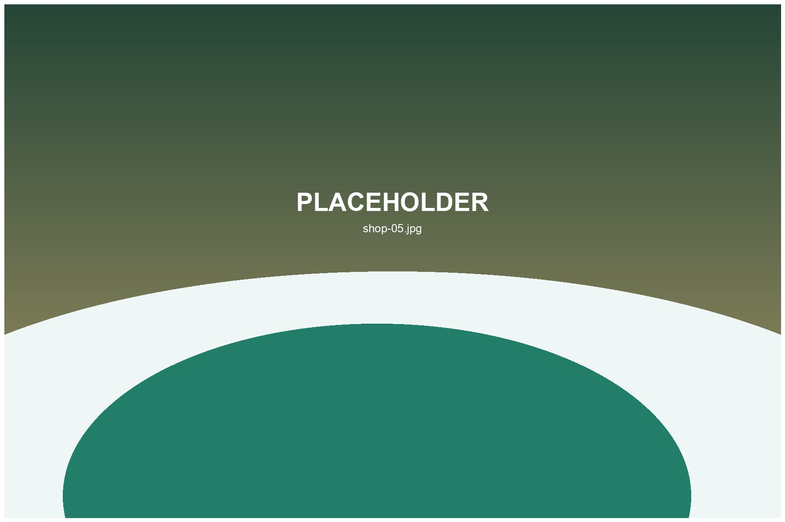

Used Club Shops
Compare drivers, irons, wedges and putters before a course round.
Find second-hand clubs, golf bags, accessories and shopping tips for your Okinawa golf trip.
Okinawa golf shops can be useful for used clubs, travel replacement gear, affordable accessories and pre-round preparation.
Compare drivers, irons, wedges and putters before a course round.
Find stand bags, cart bags and travel accessories for Okinawa rounds.

Balls, gloves, tees, markers and small items that are easy to forget while traveling.
Yes. Used golf shops are often visitor-friendly, but stock changes frequently.
Often yes, especially for older models and lightly used equipment.
Availability may be limited, so it is better to check in advance.
Shipping policies differ by shop. Ask before purchase if luggage space is limited.